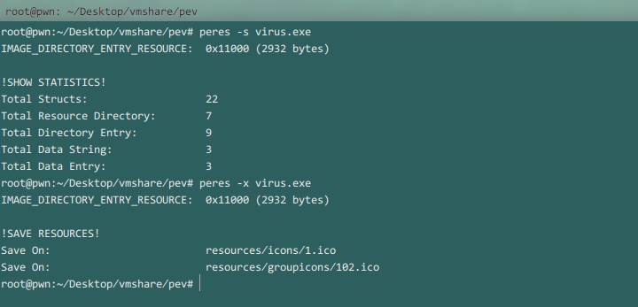

pev是Linux,Windows,Mac OS下一款分析Windows平台上PE文件的套件.包含的工具如下:
readpe :读取PE信息,比如导入导出表.
pehash :查看程序的整体,全部或某个节区的md5,sha1,ssdeep,支持的HASH算法包括:
md4, md5, ripemd160, sha, sha1, sha224, sha256 sha384, sha512, whirlpool,ssdeep
peres :对程序的资源进行处理,查看提取等,很有用.
--------------------------------------------------------------------------------------------------------
pedis :反汇编程序,可以指定从某个地址开始.
pesec :检测ASLR,DEP/NX,SEH,Stack cookies (EXPERIMENTAL).
pestr :查看程序中的字符串,类似于windows下的Strins程序.
--------------------------------------------------------------------------------------------------------
pescan :扫描程序的一些关键信息是否正常,通常可以用于预先判断程序是否有恶意意图.
ofs2rva :将指定文件偏移值(offset)转换为相对虚拟地址(RVA).其中ofs=offset,rva=relative virtual address.
rva2ofs :与rva2ofs功能相反.
pepack :查看程序的打包工具.
--------------------------------------------------------------------------------------------------------
cpload :处理cpl文件,即控制面板程序,官方文档中介绍含有此组件.但很不幸的是,此文件似乎并不存在.
Usage: readpe OPTIONS FILE
Show PE file headers
Example: readpe --header optional winzip.exe
Options:
-A, --all full output (default)
-H, --all-headers print all PE headers
-S, --all-sections print all PE sections headers
-f, --format <text|csv|xml|html> change output format (default: text)
-d, --dirs show data directories
-h, --header <dos|coff|optional> show specific header
-i, --imports show imported functions
-e, --exports show exported functions
-v, --version show version and exit
--help show this help and exit
Usage: pehash OPTIONS FILE
Calculate hashes of PE pieces
Example: pehash -s '.text' winzip.exe
Options:
-f, --format <text|csv|xml|html> change output format (default: text)
-a, --algorithm <algorithm> generate hash using one of the following algorithms:
md4, md5, ripemd160, sha, sha1, sha224, sha256
sha384, sha512, whirlpool or ssdeep
-h, --header <dos|coff|optional> hash only the header with the specified name
-s, --section <section_name> hash only the section with the specified name
--section-index <section_index> hash only the section at the specified index (1..n)
-v, --version show version and exit
--help show this help and exit
Usage: peres OPTIONS FILE
Show information about resource section and extract it
Example: peres -a putty.exe
Options:
-a, --all Show all information, statistics and extract resources
-x, --extract Extract resources
-i, --info Show informations
-s, --statistics Show statistics
-v, --version Show version and exit
--help Show this help and exit

文件(Ubuntu以及Windows安装文件)备份下载地址:http://pan.baidu.com/s/1ntsyUfR
By KillerLegend